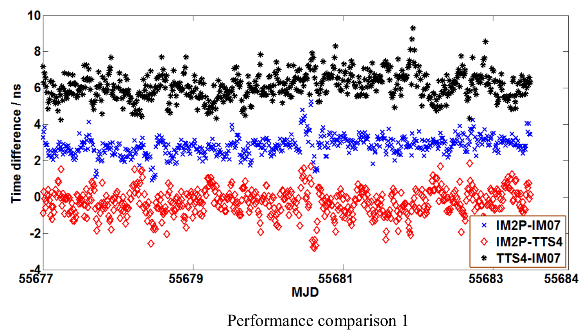
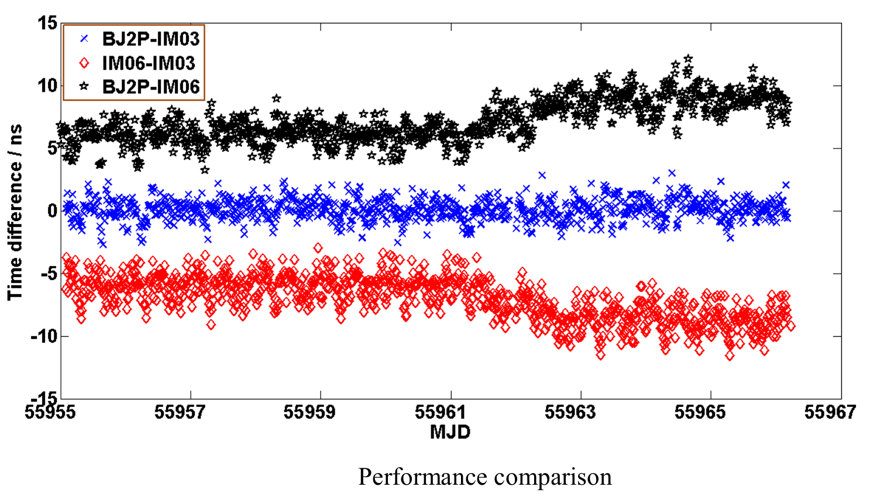
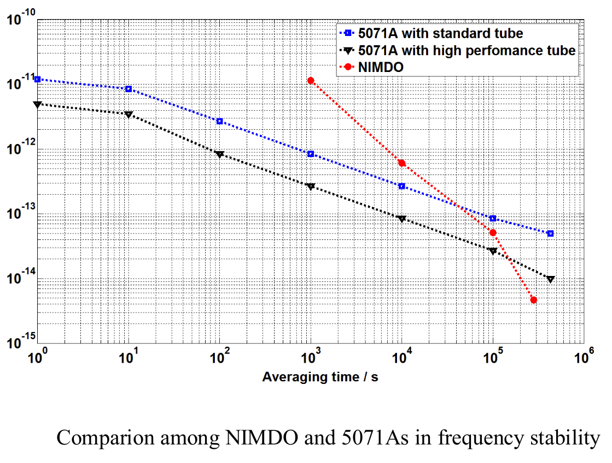
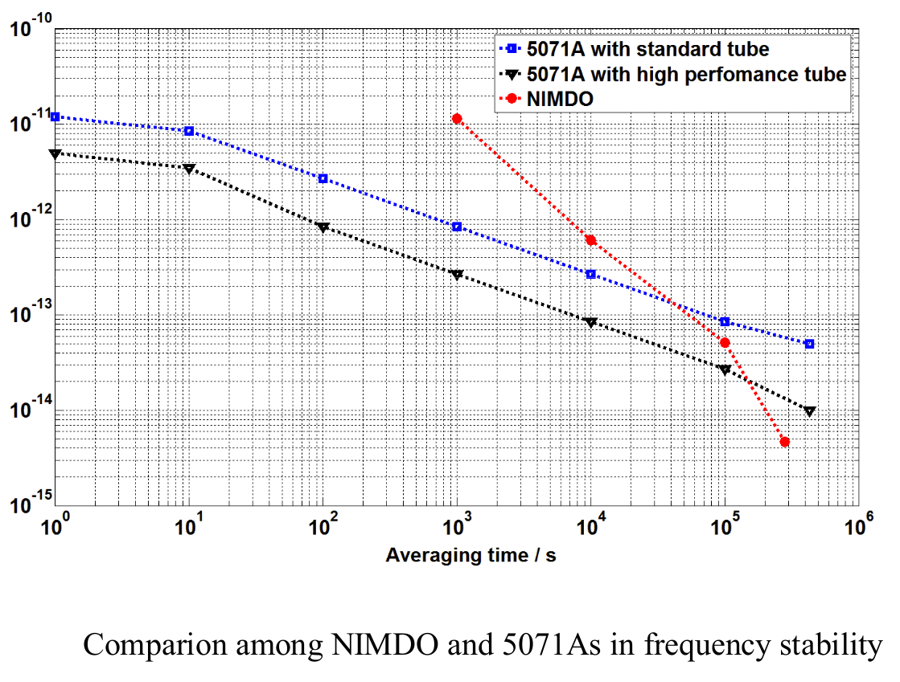

Who are we ?
We are a team of researcher in the Time and Frequency department at National Institute of Metrologia (NIM). Our work consists of synchronising all atomics clocks from all over the world to a reference clock in real time using GPS common-view time transfer, Real Time Remote Calibration (RTRC) and NIM Disciplined Oscillator system (NIMDO).
Our team is composed of the following scientists :
- Dr Liang Kun, vice director of NIM Time and Frequency department
- else
- else
- else etc
Below, we will try to do our best to try to explain the principle of our work.
-
GPS common-view Time transfer
The GPS common-view time transfer method has been introduced in the beggining of the 1980s. It led to an immediate improvement of international time comparaison. It responds to the need of more accurate ways to synchronise clocks from all over the world, indeed, atomics clocks were already really precise, the majority of uncertainty came from the previous means of comparaison.
It allows the comparaison of two clocks at differents locations in real time. To do this, a satellite sends a one-way signal to the both stations which want their clock synchronized. This signal tells the time the satellite has, so both clock set their time according to the signal. However, considering the distance between the first station and the satelitte and the second station and the satellite is different, they will not receive the signal at the same time, moreover, even though there would be at exact same distance, the quality of the receiver can also impact the synchronisation (remember, we want to be precise at a precision from 1 to 10 ns). Thus, a slight delay will appear between these two clocks.
 Real Time Remote Calibration
As explained before, the GPS common-view method alone is not enough to reach our desired precision, we want our clocks to be synchronised. Before, we used to simply do the calibration ourselves, which means laboratories that wanted their clock to be synchronised had to send their clock to us, so we could synchronised them to our and we would send back to them. Problem is, it was not really effective, the shipment would cause time information to be lost, and we would be back to the same issue. Thus, the RTRC method was developped :
Each user who uses RTRC will receive one GNSS time and frequency transfer receiver and client software that performs the measurements and sends the instant results to RTRC central server for data storage and processing via internet. RTRC uses GNSS system as the common-view reference.
The time difference between two stations is calculated by processing of RTRC central server in real-time and the real-time or historical difference can be displayed on the webpage whenever the user logs on the RTRC web site. The illustration below shows the typical process of synchronisation between several clocks.
You can see below the results of some of our experiments :
Disciplined Oscillator System
NIMDO is the significant extension of RTRC, it's used to enhance the accuracy of of the system and allows the whole process to be done in real time.
Here are the fimal results of our experiments :
 
As you can see on the graph on the left, while NIMDO starts slower, it achieves better frequency stabilities.